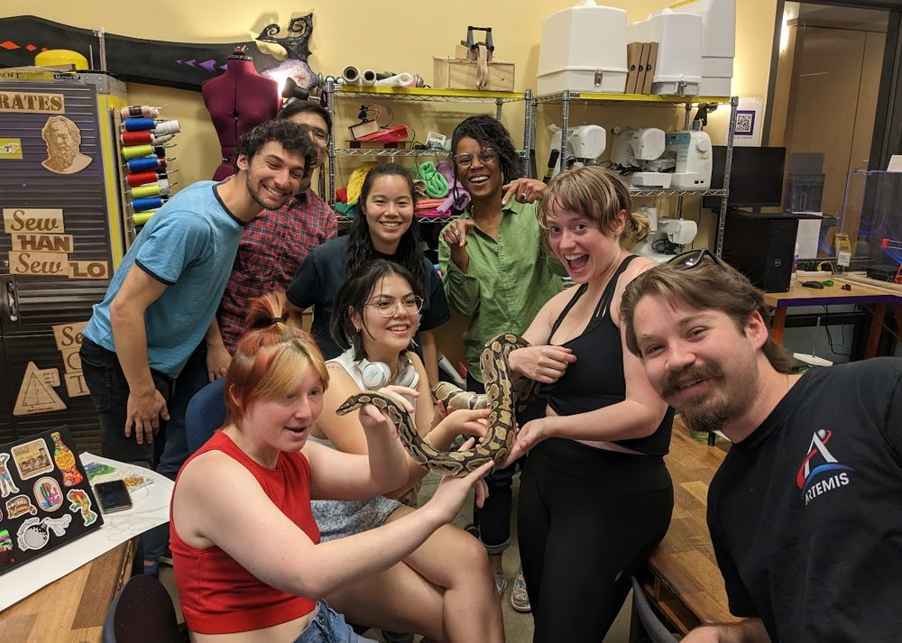
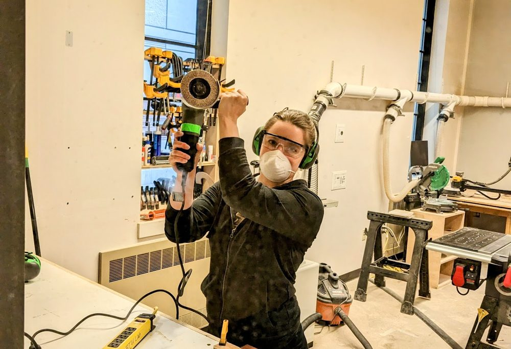
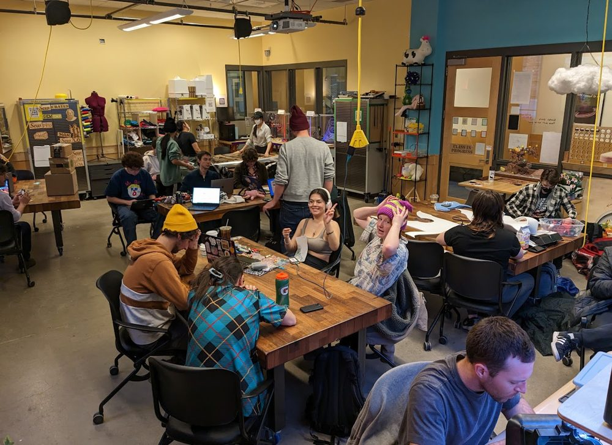

Blow. Things. Up.
The ATLAS BTU Lab is an inclusive community makerspace for projects at the intersection of art, design, engineering and architecture. It's a general workspace and a workshop host.

Who?
Anyone* can gain access to BTU. Our goal is to provide the most diverse, inclusive environment for makers of all types in a highly experimental and productive space.
*Due to increased campus security, we are currently unable to sponsor BuffOne guest cards.

How?
New members attend a 20 minute general orientation covering community expectations, safety and equipment.

When?
The orientation schedule and all scheduled events are on the calendar below.
Some areas, like the lasers and the wood shop, have their own separate orientations. Check the calendar and the pages for your interests.
Calendar
Where?
320 UCB
1125 18th St
Boulder, CO 80309